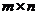
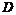
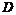

Problem D
The Great Escape
Poor
Kianoosh! 6 weeks since he was officially accepted as a citizen of Barareh and
during this time he has had nothing but Nochophskew for his breakfast, lunch
and dinner. And nowadays, during the nights, he dreams of nothing but a small
piece of bread, some cheese and a glass of milk to have for his breakfast. And
during the days, he thinks of nothing but a great escape from this weird city
in order to turn his night-time dreams into reality.
After
carefully checking all the potential ways out of the city, he concluded that
there are only three such possible ways. The first one is through the city gate
which is of course guarded by fully-armed guards, ready to kill any creature
trying to go through the gate without permission. The second way is passing
through the northern walls of the city and going through a jungle which
contains nothing but those deadly snakes called NeshimanGazes (And be sure that
Kianoosh does not like to repeat his creepy experience with them again).
Finally,
the third and the last (and of course the only feasible) way is passing through
a secret door in the famous so called
After
spending some time gathering information about the castle, Kianoosh found out
that HezarDaroon can actually be modeled as an  grid with each cell
representing a room in the castle. There is always a door between two
neighboring rooms but there are some rooms which contain a NeshimanGaz ready to
serve anyone trying to enter the room with its poisonous bites.
There
are also some rooms which contain a rotating door. A rotating door is actually a
cylinder positioned at the center of the room with a slice removed from it. In
Figure 1, you can see a room with a rotating door with its removed slice facing
towards west.

Figure 1. A Rotating Door
As
it can be seen, one can only enter the room from the neighbor to which the
removed slice is facing. And once Kianoosh enters the room, he can rotate the
door clockwise or counter-clockwise in order to reach the other doors in the
room. For example, in the configuration of figure 1, if he rotates the door
clockwise by 90 degrees, he can reach the door to the north and if he continues
rotating the door by another 90 degrees in the same direction, he can reach the
door to east.
Another
important fact about the rotating doors is that associated to each door is a
number which is the amount of
time, measured in seconds, that it takes for a normal human-being(like
Kianoosh) to rotate the door by 90 degrees. You may also assume that going from
a room to its neighbor room takes exactly 1 second.
Today,
after spending a noticeable amount of money, Kianoosh managed to buy a map of
the castle from underground shops of Barareh. Taking a look at the map, he
found that the entrance to the castle is located at the lower-left corner and
the secret door is located at the upper-right corner of the grid. He can also
see the position and the initial configuration of the rotating doors and the
coordinates of rooms containing the deadly NeshimanGazes to which Kianoosh does
not like to enter.
Kianoosh
is happy. He is only one step away from his dreams coming true. But how can he
find his way to the secret door? Yes! He needs help! And as a genius
problem-solver, you should help him find the path with the minimum required
time to reach the secret passage from the lower-left corner of the castle.
The Input
The
first line of the input contains an integer  which is the number of
test cases. Each test case begins with a line containing (the number of rows) and (the number of columns) followed by
which is the number of
test cases. Each test case begins with a line containing (the number of rows) and (the number of columns) followed by  lines, with the
lines, with the  th line containing
th line containing  characters, the th character of which representing the status of the th cell in the
characters, the th character of which representing the status of the th cell in the  th row of the grid (counted from north). Each character may
have six different values. A ‘.’ character represents a
normal room while a ‘#’ represents a room containing a NeshimanGaz and ‘N’, ‘W’, ‘E’, ‘S’ represent a room with a
rotating door facing north, west, east, and south respectively. The map is
followed by  integers, the
th row of the grid (counted from north). Each character may
have six different values. A ‘.’ character represents a
normal room while a ‘#’ represents a room containing a NeshimanGaz and ‘N’, ‘W’, ‘E’, ‘S’ represent a room with a
rotating door facing north, west, east, and south respectively. The map is
followed by  integers, the  th of which is equal to for the
th of which is equal to for the  th door, counting the doors from the north-west corner in a
row major order. You can assume that (which is the number of rotating doors in the castle) is no
more than 500, and the entrance (room at lower-left corner) and the room
containing the secret door (room at upper-right corner) does not contain
NeshimanGazes or rotating doors.
th door, counting the doors from the north-west corner in a
row major order. You can assume that (which is the number of rotating doors in the castle) is no
more than 500, and the entrance (room at lower-left corner) and the room
containing the secret door (room at upper-right corner) does not contain
NeshimanGazes or rotating doors.
The Output
For
each test case, your program should output a line containing a single integer
which is the minimum amount of time required for Kianoosh to reach the secret
door. In the case the secret door is not reachable with respect to the given
map and rules, a line containing the phrase “Poor Kianoosh” should be printed.
Sample Input
1
3 3
.#.
..W
...
10
Sample Output
14